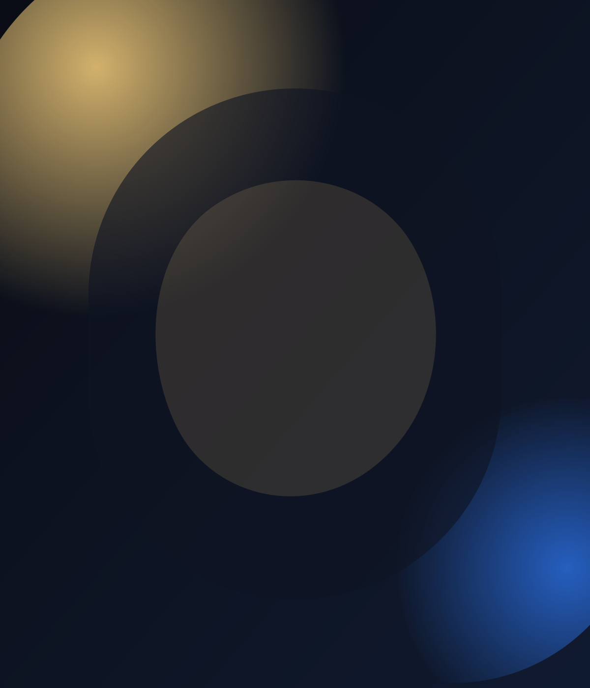

Сцена I
Золотой час, первый шаг
В архиве модного дома найдено расхождение в показаниях. Ваша команда выбирает первую линию расследования.

Сцена I
В архиве модного дома найдено расхождение в показаниях. Ваша команда выбирает первую линию расследования.